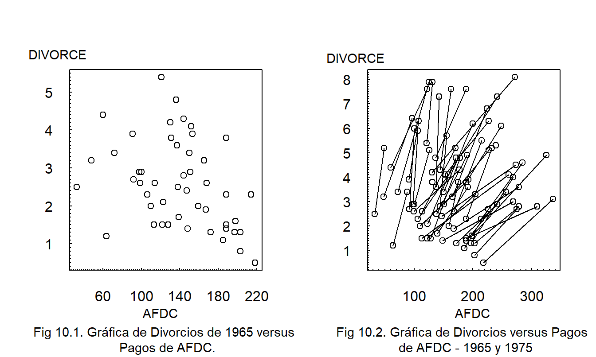

Capítulo 10 Modelos de Datos Longitudinales y de Panel
Vista Previa del Capítulo. Los datos longitudinales, también conocidos como datos de panel, están compuestos por una sección transversal de sujetos que observamos repetidamente a lo largo del tiempo. Los datos longitudinales nos permiten estudiar patrones transversales y dinámicos simultáneamente; este capítulo describe varias técnicas para visualizar datos longitudinales. Se introducen dos tipos de modelos: modelos de efectos fijos y modelos de efectos aleatorios. Este capítulo muestra cómo estimar modelos de efectos fijos usando variables explicativas categóricas. La estimación de modelos de efectos aleatorios se pospone a un capítulo posterior; este capítulo describe cuándo y cómo usar estos modelos.
10.1 ¿Qué son los Datos Longitudinales y de Panel?
En los capítulos 1 al 6 estudiamos técnicas de regresión transversal que nos permitieron predecir una variable dependiente \(y\) utilizando variables explicativas \(x\). Para muchos problemas, el mejor predictor es un valor del período anterior; los métodos de series temporales que estudiamos en los capítulos 7 al 9 utilizan la historia de una variable dependiente para la predicción. Por ejemplo, un actuario que busca predecir las reclamaciones de seguros de una pequeña empresa a menudo encontrará que las reclamaciones del año pasado son el mejor predictor. Sin embargo, una limitación de los métodos de series temporales es que se basan en disponer de muchas observaciones a lo largo del tiempo (típicamente 30 o más). Al estudiar reclamaciones anuales de una empresa, rara vez se dispone de una serie temporal larga; ya sea porque las empresas no tienen los datos o, si los tienen, no es razonable usar el mismo modelo estocástico para las reclamaciones de hoy que para las de hace 30 años. Nos gustaría tener un modelo que nos permita utilizar información sobre las características de la empresa, variables explicativas como industria, número de empleados, composición por edad y género, y así sucesivamente, así como el historial reciente de reclamaciones. Es decir, necesitamos un modelo que combine variables explicativas de regresión transversal con variables dependientes rezagadas de series temporales como predictores.
El análisis de datos longitudinales representa una fusión entre la regresión y el análisis de series temporales. Los datos longitudinales están compuestos por una sección transversal de sujetos que observamos repetidamente a lo largo del tiempo. A diferencia de los datos de regresión, con los datos longitudinales observamos a los sujetos a lo largo del tiempo. Al observar repetidamente una sección transversal, los analistas pueden realizar mejores evaluaciones de las relaciones de regresión con un diseño de datos longitudinales en comparación con un diseño de regresión. A diferencia de los datos de series temporales, con los datos longitudinales observamos a muchos sujetos. Al observar el comportamiento de series temporales en muchos sujetos, podemos realizar evaluaciones informadas de los patrones temporales incluso cuando solo está disponible una serie (temporal) corta. Los patrones temporales también se conocen como dinámicos. Con los datos longitudinales, podemos estudiar simultáneamente patrones transversales y dinámicos.
El término “datos de panel” proviene de encuestas a individuos. En este contexto, un “panel” es un grupo de individuos encuestados repetidamente a lo largo del tiempo. Usamos los términos “datos longitudinales” y “datos de panel” de manera intercambiable, aunque, por simplicidad, a menudo usamos solo el primer término.
Como hemos visto en nuestra discusión del Capítulo 6 sobre variables omitidas, cualquier nueva variable puede alterar nuestras impresiones y modelos de la relación entre \(y\) y una \(x\). Esto también es cierto para las variables dependientes rezagadas. El siguiente ejemplo demuestra que la introducción de una variable dependiente rezagada puede impactar drásticamente una relación de regresión transversal.
Ejemplo: Tasas de Divorcio. La Figura 10.1 muestra las tasas de divorcio de 1965 versus los pagos de AFDC (Ayuda para Familias con Hijos Dependientes) para los cincuenta estados. En este ejemplo, cada estado representa una unidad de observación, la tasa de divorcio es la variable dependiente de interés y el nivel de pago de AFDC representa una variable que puede contribuir a nuestra comprensión de las tasas de divorcio.

Código R para Generar Figuras 10.1 y 10.2
La Figura 10.1 muestra una relación negativa; el coeficiente de correlación correspondiente es -0.37. Algunos argumentan que esta relación negativa es contraintuitiva, ya que se esperaría una relación positiva entre los pagos de asistencia social (AFDC) y las tasas de divorcio; los estados con climas culturales deseables disfrutan tanto de bajas tasas de divorcio como de bajos pagos de asistencia social. Otros argumentan que esta relación negativa es intuitivamente plausible; los estados ricos pueden permitirse pagos altos de asistencia social y producen climas económicos y culturales propicios para bajas tasas de divorcio. Debido a que los datos son observacionales, no es apropiado argumentar una relación causal entre los pagos de asistencia social y las tasas de divorcio sin teoría económica o sociológica adicional.
Otra gráfica, no mostrada aquí, presenta una relación negativa similar para 1975; la correlación correspondiente es -0.425.
La Figura 10.2 muestra los datos de 1965 y 1975; una línea conecta las dos observaciones dentro de cada estado. La línea representa un cambio a lo largo del tiempo (dinámico), no una relación transversal. Cada línea muestra una relación positiva, es decir, a medida que aumentan los pagos de asistencia social, también lo hacen las tasas de divorcio para cada estado. Nuevamente, no inferimos direcciones de causalidad a partir de esta visualización. El punto es que la relación dinámica entre divorcio y pagos de asistencia social dentro de un estado difiere drásticamente de la relación transversal entre estados.
Los modelos de datos longitudinales a veces se diferencian de la regresión y las series temporales a través de sus “subíndices dobles”. Usamos el subíndice \(i\) para denotar la unidad de observación, o sujeto, y \(t\) para denotar el tiempo. Con este propósito, definimos \(y_{it}\) como la variable dependiente para el \(i\)-ésimo sujeto durante el \(t\)-ésimo período de tiempo. Un conjunto de datos longitudinales consiste en observaciones del \(i\)-ésimo sujeto a lo largo de \(t=1, \ldots, T_i\) períodos de tiempo, para cada uno de \(i=1, \ldots, n\) sujetos. Por lo tanto, observamos: \[ \begin{array}{cc} \textrm{primer sujeto} & \{y_{11}, \ldots, y_{1T_1} \} \\ \textrm{segundo sujeto} & \{y_{21}, \ldots, y_{2T_2} \} \\ {\vdots} & {\vdots} \\ n\textrm{-ésimo sujeto} & \{y_{n1}, \ldots, y_{nT_n} \} \\ \end{array} \]
En el ejemplo de divorcio, la mayoría de los estados tienen \(T_i=2\) observaciones y se representan gráficamente en la Figura 10.2 mediante una línea que conecta las dos observaciones. Algunos estados tienen solo \(T_i=1\) observación y se representan gráficamente mediante un círculo abierto. Para muchos conjuntos de datos, es útil permitir que el número de observaciones dependa del sujeto; \(T_i\) denota el número de observaciones para el \(i\)-ésimo sujeto. Esta situación se conoce como el caso de datos desbalanceados. En otros conjuntos de datos, cada sujeto tiene el mismo número de observaciones; esto se conoce como el caso de datos balanceados.
Las aplicaciones que consideramos están basadas en muchas unidades transversales y solo unas pocas réplicas de series temporales. Es decir, consideramos aplicaciones donde \(n\) es grande en relación a \(T = \max (T_1, \ldots, T_n)\), el número máximo de períodos de tiempo. Los lectores ciertamente encontrarán aplicaciones importantes donde ocurre lo contrario, \(T > n\), o donde \(n \approx T\).
10.2 Visualización de Datos Longitudinales y de Panel
Para explorar algunas formas de visualizar datos longitudinales, consideremos el siguiente ejemplo.
Ejemplo: Costos Hospitalarios de Medicare. Consideramos \(T=6\) años, de 1990 a 1995, de datos sobre costos hospitalarios para pacientes internados cubiertos por el programa Medicare. Los datos fueron obtenidos de la Administración de Financiamiento de Cuidados de Salud. Por ejemplo, en 1995, los costos cubiertos totales fueron de $157.8 mil millones para doce millones de altas hospitalarias. Para este análisis, usamos el estado como sujeto o clase de riesgo. Aquí, consideramos \(n=54\) estados que incluyen los 50 estados de la Unión, el Distrito de Columbia, las Islas Vírgenes, Puerto Rico y una categoría no especificada como “otros”. La variable dependiente de interés es el componente de severidad, costos cubiertos por alta, que etiquetamos como CCPD. La variable CCPD es de interés para los actuarios porque el programa Medicare reembolsa a los hospitales por estancia. Asimismo, muchos planes de atención administrada reembolsan a los hospitales por estancia. Dado que CCPD varía según el estado y el tiempo, tanto el estado como el tiempo (YEAR=1, , 6) son variables explicativas potencialmente importantes. No asumimos a priori que la frecuencia es independiente de la severidad. Por lo tanto, el número de altas, NUM_DSCHG, es otra variable explicativa potencial. También investigamos la importancia de otro componente de utilización hospitalaria, AVE_DAYS, definido como la estancia hospitalaria promedio por alta en días.

La Figura 10.3 ilustra la gráfica de series temporales múltiples. Aquí, vemos que no solo los costos cubiertos totales aumentan, sino que también aumentan para cada estado. También son evidentes diferentes niveles de costos hospitalarios entre estados; llamamos a esta característica heterogeneidad. La Figura 10.3 indica que hay mayor variabilidad entre estados que a lo largo del tiempo.
Figura 10.3: Gráfica de Series Temporales Múltiples de CCPD. Los costos cubiertos por alta (CCPD) están graficados a lo largo de \(T=6\) años, de 1990 a 1995. Los segmentos de línea conectan estados; así, vemos que el CCPD aumenta para casi todos los estados con el tiempo.
Código R para Generar la Figura 10.3
La Figura 10.4 es una variación de una gráfica de dispersión con símbolos. Esta es una gráfica de CCPD contra el número de altas. En lugar de usar diferentes símbolos para cada estado, conectamos observaciones dentro de un estado a lo largo del tiempo. Esta gráfica muestra una relación positiva general entre CCPD y el número de altas. Al igual que CCPD, vemos una variación sustancial entre estados en los diferentes números de altas. También como CCPD, el número de altas aumenta con el tiempo, de modo que, para cada estado, hay una relación positiva entre CCPD y el número de altas. La pendiente es mayor para aquellos estados con un menor número de altas. Esta gráfica también sugiere que el número de altas con un rezago de un año es un predictor importante de CCPD.
Figura 10.4: Gráfica de Dispersión de CCPD contra Número de Altas. Los segmentos de línea conectan observaciones dentro de un estado durante 1990-1995. Vemos una variación sustancial entre estados en el número de altas. Existe una relación positiva entre CCPD y el número de altas para cada estado. Las pendientes son mayores para aquellos estados con un menor número de altas.
Código R para Generar la Figura 10.4
Gráfica Trellis
Una técnica para la visualización gráfica que ha ganado popularidad recientemente en la literatura estadística es la gráfica Trellis. Esta técnica gráfica toma su nombre de un “trellis”, que es una estructura de celosía abierta. Al observar una casa o jardín, generalmente se piensa en un trellis como un soporte para plantas trepadoras como enredaderas. Usamos esta estructura de celosía y nos referimos a una gráfica Trellis como un conjunto de uno o más paneles organizados en una matriz rectangular. Las gráficas que contienen múltiples versiones de una forma gráfica básica, cada versión representando una variación del tema básico, promueven comparaciones y evaluaciones de cambio. Al repetir una forma gráfica básica, promovemos el proceso de comunicación.
Tufte (1997) afirma que el uso de pequeños múltiples en las representaciones gráficas logra los mismos efectos deseables que el uso de estructuras paralelas en la escritura. La estructura paralela en la escritura es exitosa porque permite a los lectores identificar una relación de oración una sola vez y luego enfocarse en el significado de cada elemento individual de la oración, como una palabra, frase o cláusula. La estructura paralela ayuda a lograr economía de expresión y a reunir ideas relacionadas para comparación y contraste. De manera similar, los pequeños múltiples en las gráficas nos permiten visualizar relaciones complejas entre diferentes grupos y a lo largo del tiempo. Consulte la Guía Cinco en la Sección 21.3 para una discusión más detallada.
La Figura 10.5 ilustra el uso de pequeños múltiples. En cada panel, la gráfica representada es idéntica excepto que se basa en un estado diferente; este uso de estructura paralela nos permite demostrar el aumento en los costos cubiertos por alta (CCPD) para cada estado. Además, al organizar los estados por CCPD promedio, podemos observar el nivel general de CCPD para cada estado, así como las variaciones en la pendiente (tasa de aumento).
Figura 10.5: Gráfica Trellis de CCPD versus Año. Cada uno de los 54 paneles representa una gráfica de CCPD versus YEAR, 1990-1995 (el eje horizontal está suprimido). El aumento para Nueva Jersey (NJ) es inusualmente grande.
Código R para Generar la Figura 10.5
10.3 Modelos Básicos de Efectos Fijos
Datos
Como se describe en la Sección 10.1, denotamos \(y_{it}\) como la variable dependiente del \(i\)-ésimo sujeto en el \(t\)-ésimo punto temporal. Asociado con cada variable dependiente hay un conjunto de variables explicativas. Para el ejemplo de costos hospitalarios por estado, estas variables explicativas incluyen el número de pacientes dados de alta y la estancia hospitalaria promedio por alta. En general, asumimos que hay \(k\) variables explicativas \(x_{it,1}, x_{it,2}, \ldots, x_{it,k}\) que pueden variar según el sujeto \(i\) y el tiempo \(t\). Logramos una forma notacional más compacta expresando las \(k\) variables explicativas como un vector columna \(k \times 1\): \[ \mathbf{x}_{it} = \left(\begin{array}{c} x_{it,1} \\ x_{it,2} \\ \vdots \\ x_{it,k} \end{array}\right) . \]
Con esta notación, los datos para el \(i\)-ésimo sujeto consisten en: \[ \left(\begin{array}{c} x_{i1,1}, x_{i1,2}, \ldots, x_{i1,k}, y_{i1} \\ \vdots \\ x_{iT_i,1}, x_{iT_i,2}, \ldots, x_{iT_i,k}, y_{iT_i} \\ \end{array}\right) = \left(\begin{array}{c} \mathbf{x}_{i1}^{\prime}, y_{i1} \\ \vdots \\ \mathbf{x}_{iT_i}^{\prime}, y_{iT_i} \\ \end{array}\right) . \]
Modelo
Un modelo básico (y muy útil) de datos longitudinales es un caso especial del modelo de regresión lineal múltiple introducido en la Sección 3.2. Utilizamos las suposiciones de modelado de la Sección 3.2.3 con la función de regresión \[\begin{eqnarray} \mathrm{E}~y_{it} & = & \alpha_i + \beta_1 x_{it,1} + \beta_2 x_{it,2} + \cdots + \beta_k x_{it,k} \nonumber\\ & = & \alpha_i + \mathbf{x}_{it}^{\prime} \boldsymbol \beta,~~~~~~ t=1, \ldots, T_i,~~ i=1, \ldots, n . \tag{10.1} \end{eqnarray}\] Este es el modelo básico de efectos fijos.
Los parámetros \(\{\beta_j\}\) son comunes a cada sujeto y se denominan parámetros globales, o de población. Los parámetros \(\{\alpha_i\}\) varían por sujeto y se conocen como parámetros individuales, o específicos del sujeto. En muchas aplicaciones, los parámetros de población capturan relaciones generales de interés y, por lo tanto, son los parámetros de interés. Los parámetros específicos del sujeto explican las características diferentes de los sujetos, no los patrones generales de la población. Por lo tanto, a menudo son de interés secundario y se denominan parámetros de nuisance. En la Sección 10.5, discutiremos el caso donde \(\{\alpha_i\}\) son variables aleatorias. Para distinguir este caso, esta sección trata a \(\{\alpha_i\}\) como parámetros no estocásticos denominados “efectos fijos”.
Los parámetros específicos del sujeto ayudan a controlar las diferencias, o “heterogeneidad” entre los sujetos. Los estimadores de estos parámetros utilizan información en las mediciones repetidas sobre un sujeto. Por el contrario, los parámetros \(\{\alpha_i\}\) no son estimables en modelos de regresión transversal sin observaciones repetidas. Es decir, con \(T_i = 1\), el modelo \(y_{it} = \alpha_i + \beta_1 x_{it,1}\) \(+ \beta_2 x_{it,2} + \cdots + \beta_k x_{it,k}\) \(+ \varepsilon_{it}\) tiene más parámetros (\(n+k\)) que observaciones (\(n\)), y, por lo tanto, no podemos identificar todos los parámetros. Normalmente, el término de perturbación \(\varepsilon_{it}\) incluye la información en \(\alpha_i\) en los modelos de regresión transversal. Una ventaja importante de los modelos de datos longitudinales en comparación con los modelos de regresión transversal es la capacidad de separar los efectos de \(\{\alpha_i\}\) de los términos de perturbación \(\{\varepsilon_{it}\}\). Al separar los efectos específicos del sujeto, nuestras estimaciones de la variabilidad se vuelven más precisas y logramos inferencias más exactas.
Estimación
La estimación del modelo básico de efectos fijos se deriva directamente de los métodos de mínimos cuadrados. La idea clave es que los parámetros de heterogeneidad \(\{\alpha_i\}\) simplemente representan un factor, es decir, una variable categórica que describe la unidad de observación. Con esto, la estimación por mínimos cuadrados sigue directamente con los detalles proporcionados en la Sección 4.4 y los apéndices de apoyo.
Como se describe en el Capítulo 4, se pueden reemplazar las variables categóricas con un conjunto apropiado de variables binarias. Por esta razón, los estimadores de datos de panel a veces se conocen como estimadores del modelo de mínimos cuadrados con variables ficticias. Sin embargo, como hemos visto en el Capítulo 4, se debe tener cuidado con las rutinas estadísticas. Para algunas aplicaciones, el número de sujetos puede fácilmente llegar a miles. Crear tantas variables binarias es computacionalmente engorroso. Cuando identifica una variable como categórica, los paquetes estadísticos generalmente utilizan procedimientos recursivos más eficientes computacionalmente (descritos en la Sección 4.7.2).
El factor de heterogeneidad \(\{\alpha_i\}\) no depende del tiempo. Debido a esto, es fácil establecer que los coeficientes de regresión asociados con variables constantes en el tiempo no se pueden estimar utilizando el modelo básico de efectos fijos. En otras palabras, las variables constantes en el tiempo son perfectamente colineales con el factor de heterogeneidad. Debido a esta limitación, los analistas a menudo prefieren diseñar sus estudios para utilizar el modelo alternativo de efectos aleatorios que describiremos en la Sección 10.5.
Ejemplo: Costos Hospitalarios de Medicare - Continuación. Comparamos el ajuste del modelo básico de efectos fijos con los modelos de regresión ordinaria. El Modelo 1 de Tabla 10.1 muestra el ajuste de un modelo de regresión ordinaria utilizando el número de altas (NUM_DCHG), YEAR y la estancia hospitalaria promedio (AVE_DAYS). Según los grandes valores \(t\)-estadísticos, cada variable es estadísticamente significativa. El término de intersección no se imprime.
La Figura 10.5 sugiere que New Jersey tiene un aumento inusualmente grande. Por lo tanto, se creó un término de interacción, YEARNJ, que equivale a YEAR si la observación es de New Jersey y cero en caso contrario. Esta variable se incorpora en el Modelo 2, donde no parece ser significativa.
Tabla 10.1 también muestra el ajuste de un modelo básico de efectos fijos con estas variables explicativas. En la tabla, no se informan los 54 coeficientes específicos de sujeto. En este modelo, cada variable es estadísticamente significativa, incluido el término de interacción. Lo más notable es la mejora en el ajuste general. La desviación estándar residual (\(s\)) disminuyó de 2,731 a 530 y el coeficiente de determinación (\(R^2\)) aumentó del 29% al 99.8%.
Tabla 10.1. Coeficientes y Estadísticas Resumen de Tres Modelos
\[ \small{ \begin{array} {lrrrrrr} \hline &\text{Regresión}&&\text{Regresión}&&\text{Modelo Básico de} \\ &\text{Modelo 1} &&\text{Modelo 2} & &\text{Efectos Fijos} \\ & \text{Coeficiente} & t\text{-estad} &\text{Coeficiente} & t\text{-estad} &\text{Coeficiente} & t\text{-estad} \\ \hline \text{NUM_DCHG} & 4.70 & 6.49 & 4.66 & 6.44 & 10.75 & 4.18 \\ \text{YEAR} & 744.15 & 7.96 & 733.27 & 7.79 & 710.88 & 26.51 \\ \text{AVE_DAYS} & 325.16 & 3.85 & 308.47 & 3.58 & 361.29 & 6.23 \\ \text{YEARNJ} & & & 299.93 & 1.01 & 1,262.46 & 9.82 \\ \hline s & {2,731.90} & & {2,731.78} & & {529.45} \\ R^2 \text{ (en porcentaje)} & {28.6} & &{28.8} && {99.8} \\ R_a^2 \text{ (en porcentaje)} & {27.9} && {27.9} && {99.8} \\ \hline \end{array} } \]
R Code to Produce Table 10.1
10.4 Modelos Extendidos de Efectos Fijos
Modelos de Análisis de Covarianza
En el modelo básico de efectos fijos, no se asumen relaciones especiales entre sujetos y períodos de tiempo. Intercambiando los roles de “\(i\)” y “\(t\)”, podemos considerar la función de regresión \[ \mathrm{E}~y_{it} = \lambda_t + \mathbf{x}_{it}^{\prime} \boldsymbol \beta. \] Tanto esta función de regresión como la de la ecuación (10.1) se basan en los modelos tradicionales de análisis de covarianza de una vía introducidos en la Sección 4.4. Por esta razón, el modelo básico de efectos fijos también se llama el modelo de efectos fijos de una vía. Usando variables binarias (dummy) para la dimensión temporal, podemos incorporar parámetros específicos del tiempo en los parámetros de población. De esta forma, es sencillo considerar la función de regresión \[ \mathrm{E}~y_{it} = \alpha_i + \lambda_t + \mathbf{x}_{it}^{\prime} \boldsymbol \beta , \] conocida como el modelo de efectos fijos de dos vías.
Ejemplo: Salarios Urbanos. Glaeser y Maré (2001) investigaron los efectos de los determinantes sobre los salarios, con el objetivo de comprender por qué los trabajadores en ciudades ganan más que sus contrapartes no urbanas. Examinaron modelos de efectos fijos de dos vías utilizando datos de la Encuesta Nacional Longitudinal de la Juventud (NLSY); también usaron datos del Estudio Panel de Dinámica de Ingresos (PSID) para evaluar la robustez de sus resultados en otra muestra. Para los datos de la NLSY, examinaron \(n = 5,405\) hombres jefes de familia durante los años 1983-1993, consistiendo en un total de \(N = 40,194\) observaciones. La variable dependiente fue el salario horario logarítmico. La principal variable explicativa de interés fue una variable categórica de tres niveles que mide el tamaño de la ciudad en la que residen los trabajadores. Para capturar esta variable, se usaron dos variables binarias (dummy): (1) una variable para indicar si el trabajador reside en una gran ciudad (con más de medio millón de residentes), un “área metropolitana densa”, y (2) una variable para indicar si el trabajador reside en un área metropolitana que no contiene una gran ciudad, un “área metropolitana no densa”. El nivel de referencia es un área no metropolitana. Se incluyeron varias otras variables de control para capturar los efectos de la experiencia, ocupación, educación y raza del trabajador. Al incluir variables dummy temporales, hubo \(k = 30\) variables explicativas en las regresiones reportadas.
Modelos de Coeficientes Variables
En el ejemplo de costos hospitalarios de Medicare, introdujimos una variable de interacción para representar los aumentos inusualmente altos en los costos de Nueva Jersey. Sin embargo, un examen de la Figura 10.5 sugiere que muchos otros estados también son “inusuales”. Siguiendo esta línea de pensamiento, podríamos desear permitir que cada estado tenga su propia tasa de incremento, correspondiente a los aumentos en los costos hospitalarios para ese estado. Podríamos considerar una función de regresión de la forma \[\begin{equation} \small{ \mathrm{E}~CCPD_{it} = \alpha_i + \beta_1 (NUM\_DCHG)_{it} + \beta_{2i} (YEAR)_{t} + \beta_3 (AVE\_DAYS)_{it} , } \tag{10.2} \end{equation}\] donde la pendiente asociada con YEAR se permite que varíe con el estado “\(i\)”.
Siguiendo esta línea de pensamiento, escribimos la función de regresión para un modelo de coeficientes variables de efectos fijos como \[ \mathrm{E}~y_{it} = \mathbf{x}_{it}^{\prime} \boldsymbol \beta_i. \] Con esta notación, podemos permitir que cualquiera o todas las variables estén asociadas con coeficientes específicos del sujeto. Para simplicidad, el intercepto específico del sujeto ahora se incluye en el vector de coeficientes de regresión \(\boldsymbol \beta_i\).
Ejemplo: Costos Hospitalarios de Medicare - Continuación. La función de regresión en la ecuación (10.2) se ajustó a los datos. No es sorprendente que haya resultado en un excelente ajuste en el sentido de que el coeficiente de determinación sea \(R^2 = 99.915 \%\) y la versión ajustada sea \(R_a^2 = 99.987 \%\). Sin embargo, comparado con el modelo básico de efectos fijos, hay 52 parámetros adicionales, una pendiente para cada estado (54 estados inicialmente, menos uno para el término de ‘población’ y menos uno para Nueva Jersey ya incluido). ¿Son útiles los términos adicionales? Una forma de analizar esto es mediante la prueba de hipótesis lineal general introducida en la Sección 4.2.2. En este contexto, el modelo de coeficientes variables representa la ecuación “completa” y el modelo básico de efectos fijos es nuestra ecuación “reducida”. De la ecuación (4.4), el estadístico de prueba es \[ F-\textrm{ratio} = \frac {(0.99915 - 0.99809)/52}{(1-0.99915)/213} = 5.11 . \] Comparando esto con la distribución \(F\) con \(df_1 = 52\) y \(df_2 = 213\), vemos que el \(p\)-valor asociado es menor a 0.0001, indicando una fuerte significancia estadística. Por lo tanto, esta es una indicación de que el modelo de pendiente variable es preferido en comparación con el modelo básico de efectos fijos.
Modelos con Correlación Serial
En datos longitudinales, los sujetos se miden repetidamente a lo largo del tiempo. Para algunas aplicaciones, las tendencias temporales representan una porción menor de la variación general. En estos casos, se puede ajustar su presencia calculando errores estándar de los coeficientes de regresión de manera robusta, similar a la discusión en la Sección 5.7.2. Sin embargo, para otras aplicaciones, entender bien las tendencias temporales es vital. Una de estas aplicaciones, importante en la ciencia actuarial, es la predicción; por ejemplo, recuerde la discusión en la Sección 10.1 sobre un actuario que predice reclamaciones de seguros para una pequeña empresa.
Hemos visto en los Capítulos 7–9 algunas formas básicas de incorporar tendencias temporales, a través de tendencias lineales en el tiempo (como el término YEAR en el ejemplo de costos hospitalarios de Medicare) o utilizando variables dummy en el tiempo (otro tipo de modelo de efectos fijos de una vía). Otra posibilidad es usar una variable dependiente rezagada como predictor. Sin embargo, se sabe que esto tiene consecuencias negativas inesperadas para el modelo básico de efectos fijos (véase, por ejemplo, la discusión en Hsiao, 2003, Sección 4.2, o Frees, 2004, Sección 6.3).
En su lugar, es habitual examinar la estructura de correlación serial del término de perturbación \(\varepsilon_{it} = y_{it} - \mathrm{E}~y_{it}\). Por ejemplo, una especificación común es usar una autocorrelación de orden uno, estructura \(AR(1)\), como \[ \varepsilon_{it} = \rho_{\varepsilon} \varepsilon_{i,t-1} + \eta_{it}, \] donde \(\{ \eta_{it} \}\) es un conjunto de variables aleatorias de perturbación y \(\rho_{\varepsilon}\) es el parámetro de autocorrelación. En muchos conjuntos de datos longitudinales, el pequeño número de mediciones en el tiempo (\(T\)) dificultaría el cálculo del coeficiente de correlación \(\rho_{\varepsilon}\) utilizando métodos tradicionales como los introducidos en el Capítulo 8. Sin embargo, con datos longitudinales, tenemos muchas replicaciones (\(n\)) de estas series de tiempo cortas; intuitivamente, estas replicaciones proporcionan la información necesaria para estimar de manera confiable el parámetro autorregresivo.
10.5 Modelos de Efectos Aleatorios
Supongamos que se está interesado en estudiar el comportamiento de sujetos seleccionados aleatoriamente de una población. Por ejemplo, podría desear predecir reclamaciones de seguros para una pequeña empresa utilizando características de la empresa, así como el historial de reclamaciones pasado. Aquí, el conjunto de pequeñas empresas puede seleccionarse aleatoriamente de una base de datos más grande. En contraste, el ejemplo de Medicare en la Sección 10.3 trató con un conjunto fijo de sujetos. Es decir, es difícil pensar en los 54 estados como un subconjunto de alguna “superpoblación” de estados. Para ambas situaciones, es natural usar parámetros específicos del sujeto, \(\{\alpha_i \}\), para representar la heterogeneidad entre los sujetos. A diferencia de la Sección 10.3, ahora discutimos situaciones en las que es más razonable representar \(\{\alpha_i \}\) como variables aleatorias en lugar de parámetros fijos pero desconocidos. Al argumentar que \(\{\alpha_i \}\) son muestras de una distribución, tendremos la capacidad de hacer inferencias sobre sujetos en una población que no están incluidos en la muestra.
Modelo Básico de Efectos Aleatorios
La ecuación del modelo básico de efectos aleatorios es \[\begin{equation} y_{it} = \alpha_i + \mathbf{x}_{it}^{\prime} \boldsymbol \beta + \varepsilon_{it},~~~~~~ t=1, \ldots, T_i,~~ i=1, \ldots, n . \tag{10.3} \end{equation}\] Esta notación es similar al modelo básico de efectos fijos. Sin embargo, ahora el término \(\alpha_i\) se asume como una variable aleatoria, no como un parámetro fijo desconocido. El término \(\alpha_i\) se conoce como un efecto aleatorio. Los modelos de efectos mixtos son aquellos que incluyen efectos aleatorios y fijos. Debido a que la ecuación (10.3) incluye efectos aleatorios (\(\alpha_i\)) y efectos fijos (\(\mathbf{x}_{it}\)), el modelo básico de efectos aleatorios es un caso especial del modelo lineal mixto. El modelo lineal mixto general se introduce en la Sección 15.1.
Para completar la especificación, asumimos que \(\{\alpha_i \}\) son idéntica e independientemente distribuidos con media cero y varianza \(\sigma_{\alpha}^2\). Además, asumimos que \(\{\alpha_i \}\) son independientes de las variables aleatorias de perturbación, \(\varepsilon_{it}\). Note que debido a que \(\mathrm{E} ~\alpha_i = 0\), es habitual incluir una constante dentro del vector \(\mathbf{x}_{it}\). Esto no era cierto en los modelos de efectos fijos en la Sección 10.3 donde no centramos los términos específicos del sujeto alrededor de 0.
Las combinaciones lineales de la forma \(\mathbf{x}_{it}^{\prime} \boldsymbol \beta\) cuantifican el efecto de variables conocidas que pueden afectar la variable dependiente. Las variables adicionales, que son poco importantes o inobservables, forman parte del “término de error”. En la ecuación (10.3), podemos pensar en un modelo de regresión \(y_{it} = \mathbf{x}_{it}^{\prime} \boldsymbol \beta + \eta_{it},\) donde el término de error \(\eta_{it}\) se descompone en dos componentes para que \(\eta_{it}= \alpha_i + \varepsilon_{it}\). El término \(\alpha_i\) representa la porción constante en el tiempo, mientras que \(\varepsilon_{it}\) representa la porción restante. Para identificar los parámetros del modelo, asumimos que los dos términos son independientes. En la literatura econométrica, esto se conoce como el modelo de componentes del error; en las ciencias biológicas, se conoce como el modelo de interceptos aleatorios.
Estimación
La estimación del modelo de efectos aleatorios no sigue directamente los métodos de mínimos cuadrados como en los modelos de efectos fijos. Esto se debe a que las observaciones ya no son independientes debido a los términos de efectos aleatorios. En su lugar, se utiliza una extensión de los mínimos cuadrados conocida como mínimos cuadrados generalizados para tener en cuenta esta dependencia. Los mínimos cuadrados generalizados, a menudo denominados por el acrónimo GLS, son un tipo de mínimos cuadrados ponderados. Dado que los modelos de efectos aleatorios son casos especiales de los modelos lineales mixtos, introduciremos la estimación GLS en este marco más amplio en la Sección 15.1.
Para ver la dependencia entre observaciones, consideremos la covarianza entre las dos primeras observaciones del \(i\)-ésimo sujeto. Los cálculos básicos muestran:
\[\begin{eqnarray*} \mathrm{Cov}(y_{i1}, y_{i2}) &= &\mathrm{Cov}(\alpha_i + \mathbf{x}_{i1}^{\prime} \boldsymbol \beta + \varepsilon_{i1}, \alpha_i + \mathbf{x}_{i2}^{\prime} \boldsymbol \beta + \varepsilon_{i2}) \\ &= &\mathrm{Cov}(\alpha_i +\varepsilon_{i1}, \alpha_i + \varepsilon_{i2}) \\ &= &\mathrm{Cov}(\alpha_i , \alpha_i)+\mathrm{Cov}(\alpha_i, \varepsilon_{i2})+\mathrm{Cov}(\varepsilon_{i1}, \alpha_i)+\mathrm{Cov}(\varepsilon_{i1}, \varepsilon_{i2}) \\ &= & \mathrm{Cov}(\alpha_i , \alpha_i) = \sigma^2_{\alpha} . \end{eqnarray*}\]
Los términos sistemáticos \(\mathbf{x}^{\prime} \boldsymbol \beta\) desaparecen del cálculo de covarianza porque no son aleatorios. Además, los términos de covarianza que involucran \(\varepsilon\) son cero debido a la independencia asumida. Este cálculo muestra que la covarianza entre dos observaciones del mismo sujeto es \(\sigma^2_{\alpha}\). Cálculos similares muestran que la varianza de una observación es \(\sigma^2_{\alpha} +\sigma^2_{\varepsilon}.\) Por lo tanto, la correlación entre observaciones dentro de un sujeto es \(\sigma^2_{\alpha} / (\sigma^2_{\alpha} +\sigma^2_{\varepsilon})\). Esta cantidad se conoce como la correlación intraclase, una medida comúnmente reportada de dependencia en estudios de efectos aleatorios.
Ejemplo: Seguro de Vida Colectivo. Frees, Young y Luo (2001) analizaron datos de reclamaciones proporcionados por un asegurador de cooperativas de crédito. Los datos contienen información sobre reclamaciones y exposición de 88 cooperativas de crédito en Florida para los años 1993-1996. Estas son reclamaciones de “ahorros de vida” de un contrato entre la cooperativa de crédito y sus miembros que proporciona un beneficio por fallecimiento basado en los ahorros depositados en la cooperativa de crédito. Los actuarios típicamente calculan el precio del seguro de vida utilizando la edad y género del asegurado, así como otras variables explicativas como la ocupación. Sin embargo, para estos datos de grupos pequeños, a menudo solo está disponible una cantidad mínima de información para comprender el comportamiento de las reclamaciones.
De las \(88 \times 4=352\) observaciones potenciales, 27 no estuvieron disponibles porque estas cooperativas de crédito no tuvieron cobertura en ese año (y, por lo tanto, fueron excluidas). Así, estos datos estaban desbalanceados. La variable dependiente es el total anual de reclamaciones del contrato de ahorros de vida, en unidades logarítmicas. Las variables explicativas fueron la cobertura anual, en unidades logarítmicas, y YEAR, una tendencia temporal.
Un ajuste del modelo básico de efectos aleatorios mostró que tanto YEAR como la cobertura anual tenían coeficientes positivos y fuertemente significativos desde el punto de vista estadístico. Es decir, la cantidad típica de reclamaciones aumentó durante el período estudiado y las reclamaciones aumentaron a medida que aumentaba la cobertura, manteniendo todo lo demás constante. También hubo fuertes efectos de las cooperativas de crédito. Por ejemplo, la correlación intraclase estimada fue de 0.703, lo que también sugiere una fuerte dependencia entre las observaciones.
Modelos Extendidos de Efectos Aleatorios
Al igual que con los efectos fijos, los modelos de efectos aleatorios pueden extenderse fácilmente para incorporar coeficientes variables y correlaciones seriales. Por ejemplo, Frees et al. (2001) consideraron la ecuación del modelo \[\begin{equation} y_{it} = \alpha_{1i} + \alpha_{2i} \mathrm{LNCoverage}_{it}+ \beta_1 + \beta_2 \mathrm{YEAR}_t+ \beta_3 \mathrm{LNCoverage}_{it}+ \varepsilon_{it}, \tag{10.4} \end{equation}\] donde \(\mathrm{LNCoverage}_{it}\) es la cobertura de ahorros de vida en unidades logarítmicas. Como en el modelo básico, es habitual usar una media cero para los efectos aleatorios. Así, el intercepto general es \(\beta_1\) y \(\alpha_{1i}\) representa las desviaciones de las cooperativas de crédito. Además, la pendiente general o global asociada con \(\mathrm{LNCoverage}\) es \(\beta_3\) y \(\alpha_{2i}\) representa las desviaciones de las cooperativas de crédito. Dicho de otra manera, la pendiente correspondiente a \(\mathrm{LNCoverage}\) para la \(i\)-ésima cooperativa de crédito es \(\beta_3 + \alpha_{2i}\).
Más generalmente, la ecuación del modelo de efectos aleatorios con coeficientes variables puede escribirse como \[\begin{equation} y_{it} = \mathbf{x}_{it}^{\prime} \boldsymbol \beta + \mathbf{z}_{it}^{\prime} \boldsymbol \alpha _i + \varepsilon_{it}. \tag{10.5} \end{equation}\] Al igual que en el modelo de efectos fijos con coeficientes variables, podemos permitir que cualquiera o todas las variables estén asociadas con coeficientes específicos para cada sujeto. La convención utilizada en la literatura es especificar los efectos fijos a través del componente sistemático \(\mathbf{x}_{it}^{\prime} \boldsymbol \beta\) y los efectos aleatorios a través del componente \(\mathbf{z}_{it}^{\prime} \boldsymbol \alpha _i\). Aquí, el vector \(\mathbf{z}_{it}\) típicamente es igual o un subconjunto de \(\mathbf{x}_{it}\), aunque no necesariamente debe ser así. Con esta notación, ahora tenemos un vector de efectos aleatorios \(\boldsymbol \alpha _i\) que son específicos de cada sujeto. Para reducir al modelo básico, solo se necesita elegir \(\boldsymbol \alpha _i\) como un escalar (un vector \(1 \times 1\)) y \(\mathbf{z}_{it}\equiv 1\). El ejemplo en la ecuación (10.4) resulta de elegir \(\boldsymbol \alpha _i = (\alpha_{1i}, \alpha_{2i})^{\prime}\) y \(\mathbf{z}_{it} = (1, \mathrm{LNCoverage}_{it})^{\prime}\).
Al igual que en los modelos de efectos fijos, se pueden incorporar fácilmente modelos de correlación serial en los modelos de efectos aleatorios especificando una estructura de correlación para \(\varepsilon_{i1}, \ldots, \varepsilon_{iT}\). Esta característica está disponible en los paquetes estadísticos y se describe completamente en las referencias de la Sección 10.6.
10.6 Lecturas Adicionales y Referencias
Los modelos de datos longitudinales y de panel se utilizan ampliamente. Por ejemplo, un índice de revistas de negocios y economía, ABI/INFORM, enumera 685 artículos en 2004 y 2005 que utilizan métodos de datos de panel. Otro índice de revistas científicas, el ISI Web of Science, enumera 1,137 artículos en 2004 y 2005 que utilizan métodos de datos longitudinales. Una introducción completa a los datos longitudinales y de panel que enfatiza aplicaciones en negocios y ciencias sociales es Frees (2004). Diggle et al. (2002) proporciona una introducción desde una perspectiva biomédica. Hsiao (2003) ofrece una introducción clásica desde una perspectiva econométrica.
Los actuarios están particularmente interesados en las predicciones resultantes de datos longitudinales. Estas predicciones pueden formar la base para actualizar los precios de seguros. Este tema se discute en el Capítulo 18 sobre credibilidad y factores bonus-malus.
Referencias del Capítulo
- Diggle, Peter J., Patrick Heagarty, Kung-Yee Liang and Scott L. Zeger (2002). Analysis of Longitudinal Data, Second Edition. Oxford University Press, London.
- Frees, Edward W. (2004). Longitudinal and Panel Data: Analysis and Applications in the Social Sciences. Cambridge University Press, New York.
- Frees, Edward W., Virginia R. Young and Yu Luo (2001). Case studies using panel data models. North American Actuarial Journal 5 (4), 24-42.
- Glaeser, E. L. and D. C. Maré (2001). Cities and skills. Journal of Labor Economics 19, 316-342.
- Hsiao, Cheng (2003). * Analysis of Panel Data, Second Edition*. Cambridge University Press, New York.
- Tufte, Edward R. (1997). Visual Explanations. Cheshire, Conn.: Graphics Press.